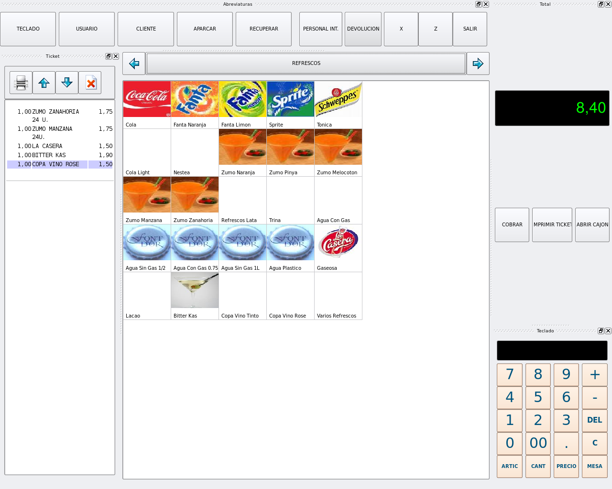

BulmaTPV es el tercer programa de gestión que desde IGLUES afrontamos. No es tan extenso como los anteriores pero, no por ello, es menos importante, ya que es una pieza clave para múltiples tipos de negocio.
BulmaTPV se compone de un pequeño núcleo que contiene las siguientes características: cuerpo de aplicación, ventana principal y soporte para los plugins. Control del hardware necesario en terminales (Ticketera, lector de código de barras ..)
Luego, junto con el programa se han desarrollado los plugins imprescindibles para un TPV operativo (hemos modelado inicialmente un sistema de restauración, aunque nuestra idea es desarrollar los componentes para otros modelos).